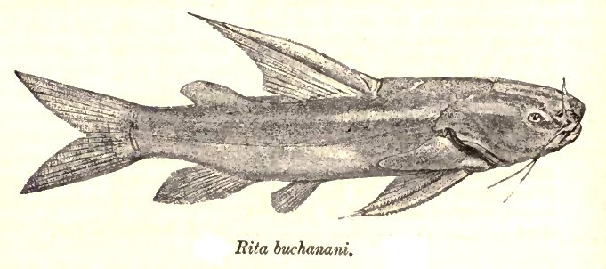

रीताRita Catfish
Rita rita · Bagridae · FSH-0007

- Scientific name
- Rita rita (Hamilton, 1822)
- Family
- Bagridae
- Hindi
- रीता
- Status here
- native
- IUCN
- LC
When to look कब देखें
Present all year.
रीता / Rita Catfish
Rita rita (Hamilton, 1822) — Bagridae
रीता — गंगा और घाघरा नदी प्रणालियों में पाई जाने वाली एक अत्यंत महत्वपूर्ण और बड़े आकार की देशी कैटफिश (catfish) है, जो स्थानीय बाजारों में अपने स्वादिष्ट मांस के कारण बहुत लोकप्रिय है। इसकी पहचान इसके बड़े सिर, थूथन पर मौजूद मूंछों (barbels), गहरे दो-भाजित पूंछ (deeply forked tail) और शरीर के दोनों तरफ पाई जाने वाली हल्की रंग की अनुदैर्ध्य धारियों (light-coloured lateral stripes) से की जाती है। यह मछली वन्यजीव संरक्षण अधिनियम (Wildlife Protection Act), 1972 की अनुसूची IV (Schedule IV) के तहत संरक्षित है। यह नदी के तल में रहने वाली एक मांसाहारी और सर्वाहारी प्रजाति है जो जलीय कीड़ों, घोंघों और छोटी मछलियों का शिकार करती है।
Quick Identification त्वरित पहचान
| Feature | Description |
|---|---|
| Size & Shape | Robust, heavy-bodied catfish with a large, depressed head; typically reaches 20–50 cm (can grow up to 150 cm) |
| Colour | Greenish-brown or greyish on the back, fading to a lighter silvery-yellow or white belly; features characteristic light-coloured longitudinal bands on the sides |
| Mouth & Barbels | Sub-terminal mouth with three pairs of barbels (nasal barbels are very short, maxillary and mandibular barbels are longer) |
| Tail Fin | Caudal fin is deeply forked with pointed lobes, facilitating strong swimming in river currents |
| Spines | Strong, dorsal and pectoral spines that are finely serrated, which can inflict painful wounds |
Field tip: Look for a heavy-bodied catfish with a large head, three pairs of barbels, a deeply forked tail fin, and distinctive light-colored longitudinal stripes on its greyish-green flanks.
Morphology आकारिकी
Biometrics (typical measurements in the Gangetic plain):
| Measurement | Range |
|---|---|
| Standard length (SL) | 150–500 mm |
| Total length (TL) | 200–600 mm |
| Weight | 500–3000 g |
Body: Stout, robust, and tapering towards the tail. The head is large, heavily ossified, and depressed. The skin is smooth and scale-less, typical of catfishes.
Head & Mouth: The snout is broad and rounded. The mouth is sub-terminal, equipped with villiform teeth in bands on both jaws. Three pairs of barbels are present around the mouth: one pair of maxillary (extending to the operculum), one pair of mandibular, and one pair of very short nasal barbels.
Fins: The dorsal fin is short with a very strong, sharp spine. The pectoral fins also possess strong, serrated spines used for defense. Caudal fin is deeply forked.
Vocalisations
Fish do not possess vocal organs and cannot produce true vocalisations.
- Sound production: Can produce grunting or clicking sounds using its pectoral spines/girdle (stridulation) when captured or stressed.
Behaviour & Ecology व्यवहार और पारिस्थितिकी
As a bottom-dwelling catfish, Rita rita is primarily active during twilight and nighttime. It prefers deep river pools with muddy or sandy substrates where it can seek refuge during the bright daylight hours.
Larval Stage
The larval stage is aquatic and pelagic.
- Larval development: Eggs are demersal and adhesive. They hatch into tiny larvae that feed on plankton.
- Substrate preference: Juveniles hide in shallow riverbanks with sandy or muddy substrates, moving to deeper channels as they grow.
- Larval duration: The larval phase lasts for about 4–6 weeks before transitioning into juveniles.
Life Cycle / Phenology जीवन चक्र
- Spawning: Spawns during the monsoon season (June to September) in flooded rivers.
- Growth: Reaches sexual maturity in 2–3 years.
- Lifespan: Can live up to 10–12 years in the wild.
Host Plants or Prey आहार
Primary food items:
- Invertebrates: Freshwater mollusks (snails and bivalves), aquatic insect larvae, and benthic crustaceans.
- Fishes: Small bottom-dwelling fishes and fish eggs.
- Organic matter: Scavenges on decomposing animal matter at the riverbed.
Predators / Natural Enemies शत्रु
- Fishes: Larger predatory fish species (e.g., Wallago attu).
- Reptiles: Large water snakes and riverine turtles, such as [REP-0008 Indian Softshell Turtle].
- Birds: Fish eagles, storks, and herons preying on juveniles in shallows.
Agricultural / Human Relevance कृषि प्रासंगिकता
Fisheries Value. Rita rita is a highly prized food fish in North India, especially Uttar Pradesh, sold fresh in local markets. It is protected under Schedule IV of the Indian Wildlife Protection Act (WPA), 1972, meaning hunting and trade are regulated. It is also ecologically beneficial as it helps control mollusk populations in riverine ecosystems.
Expected Locally स्थानीय रूप से अपेक्षित
Not a field record. Written from published accounts for eastern Uttar Pradesh. No confirmed local sighting yet — if you have seen it, that is what the atlas needs.
अभी तक स्थानीय पुष्टि नहीं। यह विवरण प्रकाशित स्रोतों से है, किसी अवलोकन से नहीं।
Frequently observed in fish markets in Basti (such as Basti city and Harraiya markets) and along the Ghaghara (Saryu) river. Caught by local fishers using longlines and gill nets. Known locally as Rita or Reeta.
Distribution वितरण
Global range: River systems of the Indian subcontinent (Pakistan, India, Nepal, Bangladesh, Myanmar).
In India: Major river systems of North India, including the Ganges, Yamuna, Brahmaputra, and Indus basins.
In Uttar Pradesh: Widely distributed in major rivers like Ganga, Yamuna, Ghaghara, Saryu, Gandak, and Rapti.
In Basti district / eastern UP: Found in the main channel of the Ghaghara (Saryu) river and the Kuwano river.
Research Questions शोध प्रश्न
Anyone can investigate these | कोई भी इन प्रश्नों की जाँच कर सकता है
- How do water temperature and turbidity affect the feeding activity of Rita Catfish in the Saryu River? — Record seasonal fish catches.
- What is the composition of the diet of Rita Catfish in different seasons? — Analyze stomach contents of market specimens.
- Can you identify the difference between the serrations of pectoral spines of Rita Catfish and other local catfish? / क्या आप रीता मछली और अन्य स्थानीय कैटफिश के छाती के पंखों (pectoral spines) के कांटों के बीच का अंतर पहचान सकते हैं? — Use a simple magnifying glass to inspect discarded fish heads.
- Does the population size of Rita Catfish show a correlation with the abundance of freshwater snails in the riverbed? — Map benthic snail density vs. fish catch rates.
- What is the current status of Rita Catfish catch in local Basti markets compared to ten years ago? / पिछले दस वर्षों की तुलना में बस्ती के स्थानीय बाजारों में रीता मछली की पकड़ की वर्तमान स्थिति क्या है? — Survey elder fishermen and market vendors.
Similar Species मिलती-जुलती प्रजातियाँ
| Species | How to tell apart | हिंदी |
|---|---|---|
| Mystus cavasius | Smaller body; much longer maxillary barbels extending beyond the caudal fin; lack of light lateral bands | पिरवा / टेंगरा — लम्बी मूंछें, छोटा शरीर |
| Wallago attu | Extremely wide mouth extending past eyes; deeply forked tail but body is highly elongated and lacks lateral stripes; long anal fin | पढ़िन — बहुत बड़ा मुँह, लम्बा शरीर |
| [FSH-0008 Striped Catfish] | Much smaller (max 18 cm); body has 4–5 distinct dark longitudinal stripes; shorter and less robust spines | टेंगरा — छोटा आकार, 4-5 धारियां |
Field rule: Large head, heavy scale-less body, three pairs of barbels (with short nasal barbels), a deeply forked tail, and pale lateral bands distinguish the Rita Catfish.
Taxonomy & Classification वर्गीकरण
Original description. Francis Hamilton described this species as Pimelodus rita in 1822 in his seminal work An Account of the Fishes Found in the River Ganges and its Branches (pages 165, 376, Plate 24, fig. 53). Type locality: Ganges river, India. The genus name Rita was later established by Bleeker, adopting the local Bengali/Hindi name.
Subspecies. Monotypic.
Family and order placement. Placed in the order Siluriformes, family Bagridae.
Phylogenetic notes. Rita rita is a basal bagrid catfish, closely related to Rita chrysea of the Mahanadi river.
IUCN status rationale. Listed as Least Concern (LC). Widespread and common across the major rivers of the Gangetic plain, though populations are subject to high fishing pressure and river pollution.
Photo Gallery फोटो गैलरी
References संदर्भ
- Hamilton, F. (1822). An Account of the Fishes Found in the River Ganges and its Branches. Archibald Constable and Company, Edinburgh, pp. 165, 376. [original description as Pimelodus rita]
- Talwar, P.K. & Jhingran, A.G. (1991). Inland Fishes of India and Adjacent Countries. Vol. 2. Oxford & IBH Publishing, New Delhi, pp. 572–574.
- Jayaram, K.C. (2006). Catfishes of India. Narendra Publishing House, Delhi, pp. 29–31.
- Ng, H.H. (2004). Phylogenetic systematics of the Bagridae (Teleostei: Siluriformes). Copeia, 2004(1), 28–49.
- IUCN SSC Freshwater Fish Specialist Group (2024). Rita rita. IUCN Red List of Threatened Species. Ver. 2024.
- GBIF Occurrence Data — Rita rita, Uttar Pradesh (2010–2025).
Source file: species/fauna/fish/rita_catfish.md